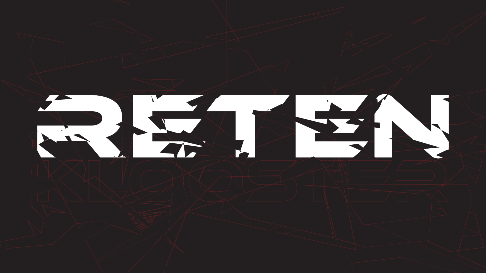

MINU KOOLITÖÖDE KONSPEKT
Tarkvara
Programmeerimine
Siin on minu kooliga seotud tööd. Tehtud tööd leiate üles kasutades navigatsiooni riba.
Minust
Õpin Tallinna Tööstushariduskeskuses noorem tarkvara arendajaks.
Siin on minu githubi profiil